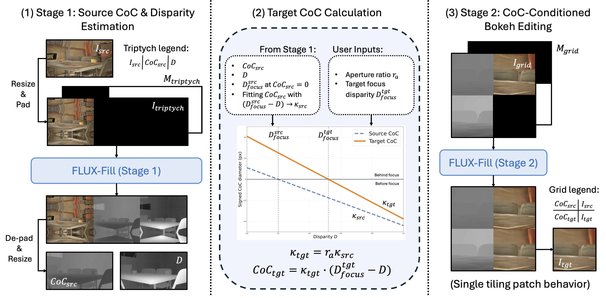

AnyBokeh edits bokeh from an arbitrary source optical state to any target focus and aperture setting.
AnyBokeh aims to achieve physics-grounded any-to-any bokeh editing by transforming an image from an arbitrary source optical state to a desired target focus and aperture setting through optical fingerprint transfer and dual-CoC conditioning.
@inproceedings{hou2026anybokeh,
title = {AnyBokeh: Physics-Guided Any-to-Any Bokeh Editing with Optical Fingerprint Transfer},
author = {Hou, Xinyu and Li, Xiaoming and Yue, Zongsheng and Loy, Chen Change},
booktitle = {Advances in Neural Information Processing Systems (NeurIPS)},
year = {2026}
}